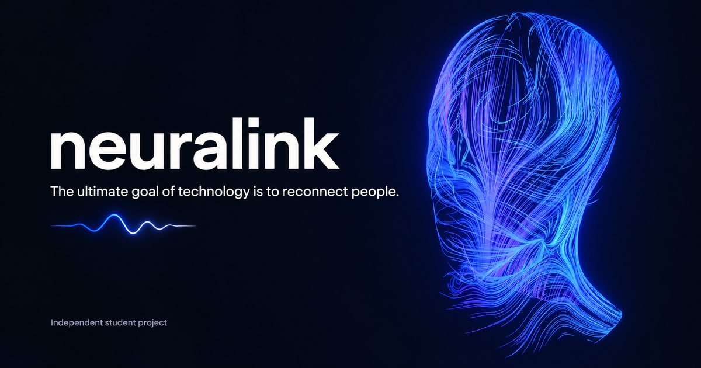

Build a path to a voice
Build the implant. Then follow a recorded signal into words.
Hardware schematic based on Neuralink’s public description. Layers and dimensions are illustrative.
Loading your workbench…
01 / The person behind the signal
Drag a component to build · Drag empty space to rotate
Drag the electronics onto the purple ring.
Biocompatible enclosure
A sealed protective housing separates the electronics from the body’s environment. The transparent cover here is a visual aid.
Neural activity over time
Each row is one of 256 recording channels. Brighter cells mean higher activity after visual scaling.
Ready to explore this recording.
DECODER TEXT · REPLAYED FROM THE STUDY
Press play or move the timeline to follow the recorded output.
Research example: data and source notes
This heatmap is supporting evidence. Moving its timeline inspects the signal only; it does not advance the guided journey. Horizontal axis: time. Vertical axis: 256 source channels. Brighter cells indicate higher scaled spike-band power.
The signal heatmap shows spike-band power from 256 channels. It is sampled every 40 ms here for a lighter web display; the source data were binned every 20 ms. Contrast is log-scaled for visibility. The words are the study’s recorded real-time n-gram decoder output. The target sentence and decoder result are shown separately because they can differ.
The study participant attempted speech. Neuralink was not involved in collecting this dataset. Audio is optional browser text-to-speech. It reads the recorded prediction in a standard English voice; it does not reconstruct T12’s voice. Available voices depend on your device and browser.
Head scan: Lee Perry-Smith / Infinite-Realities, CC BY 3.0, via Three.js. Recolored and scaled for this illustration; not the study participant.
NOW THAT YOU HAVE SEEN IT
What happened inside the decoder?
Explore how electrode threads, implant electronics and an external application form a brain–computer interface. The optional research replay illustrates a speech-decoding process.
Understand the process →Curious about Neuralink?
See the company’s technology, study information and updates in its own words.
Visit Neuralink ↗